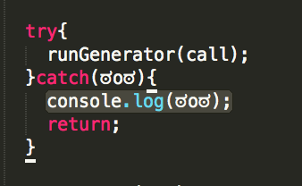
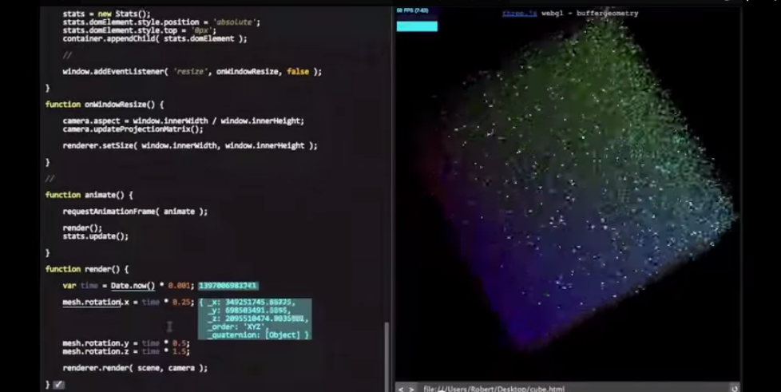
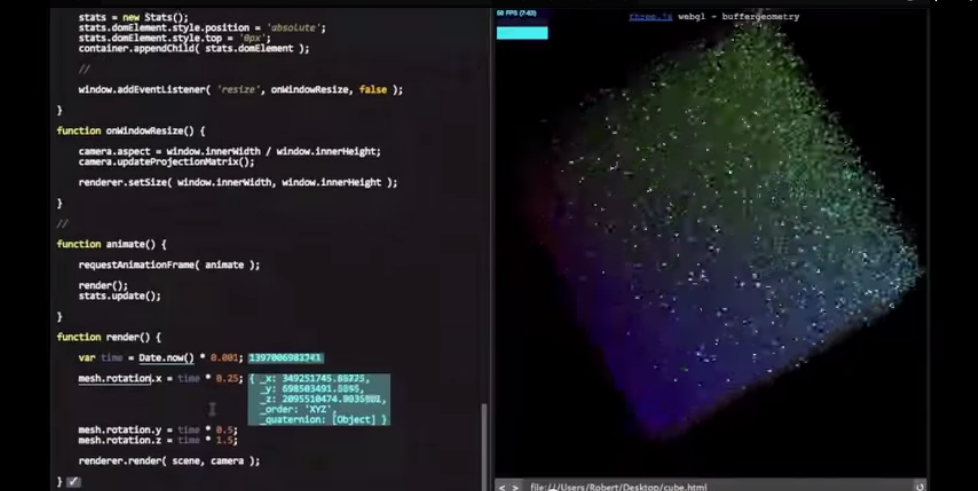
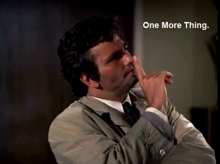

Interesting ways to explore computational concepts
3 months ago...
Visualize Programming
just kidding...
What's going on inside the program
we need to see
 

What If
Agenda
FPV Code
life demoStep by Step???
function TaskManager() {
this.tasks = [];
}
TaskManager.prototype.executeTasks = function (tasks) {
this.tasks = tasks;
this._execute();
};
TaskManager.prototype._execute = function () {
if (!this.tasks.length) {
return;
} else {
var ta = this.tasks.shift();
var direction = ta[0];
this.move(direction);
}
};
TaskManager.prototype.move = function (direction) {
var that = this;
for (var i = 0; i < 50 / UNIT + 1; i++) {
if (i < 50 / UNIT) {
setTimeout(function () {
switch (direction) {
case 'f':
you.position.z -= UNIT;
break;
case 'b':
you.position.z += UNIT;
break;
}
}, i);
} else {
setTimeout(function () {
that._execute();
}, 50 / UNIT + 1000);
}
}
};
thank you
Build It!
life demoBlock by Block???
Generator
“Generators are functions which can be exited and later re-entered. Their context (variable bindings) will be saved across re-entrances.”
--- MDN
function* idMaker(){
for(var i = 0; i < 3; i++)
yield i;
}
var gen = idMaker();
console.log(gen.next()); // Object {value: 0, done: false}
console.log(gen.next()); // Object {value: 1, done: false}
console.log(gen.next()); // Object {value: 2, done: false}
console.log(gen.next()); // Object {value: undefined, done: true}
for(var i = 0; i < 6; i++){
addThing(i, 0, 0);
}
function* wwwaaattt(num, pos){
for(var i = 0; i < 6; i++){
yield addThingAndHighlight(num, pos, 1, i, 0, 0);
}
}
var gen = wwwaaattt(clickTimes, startPosition);
if(frameCount % interval === 0 && evaled){
runGenerator(gen);
}
function* anotherGenerator(i) {
yield i + 1;
}
function* generator(i){
yield i;
yield* anotherGenerator(i);
}
var gen = generator(10);
console.log(gen.next().value); // 10
console.log(gen.next().value); // 11
console.log(gen.next().value); // undefined
function addTree(x, y, z, counter){
if ( counter > 6) return;
addThing(x, y, z);
//add root
var c = counter + 1;
//add left sub tree
addTree(x - 1, y + 1, z - 1, c);
//add right sub tree
addTree(x + 1, y + 1, z + 1, c);
}
addTree(0, 0, 0, 0);
function* wwwaaattt(num, pos){
function* addTree(x, y, z, counter){
if ( counter > 6) return;
yield addThingAndHighlight(num, pos, 2, x, y, z);
//add root
var c = counter + 1;
//add left sub tree
yield* addTree(x - 1, y + 1, z - 1, c);
//add right sub tree
yield* addTree(x + 1, y + 1, z + 1, c);
}
yield* addTree(0, 0, 0, 0);
}
